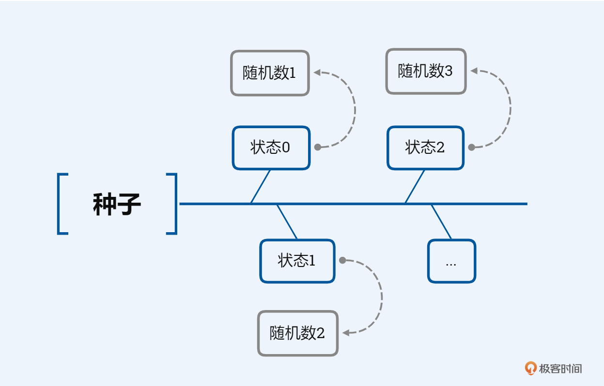
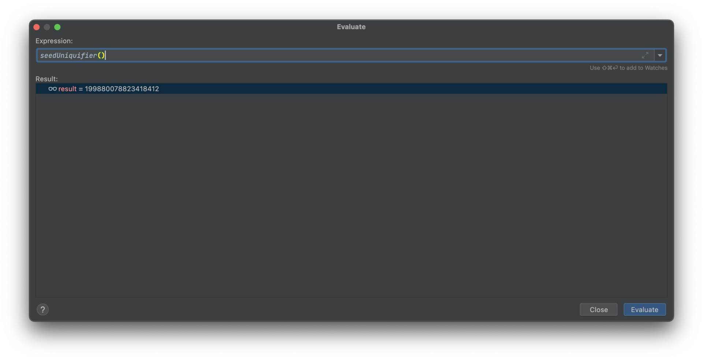
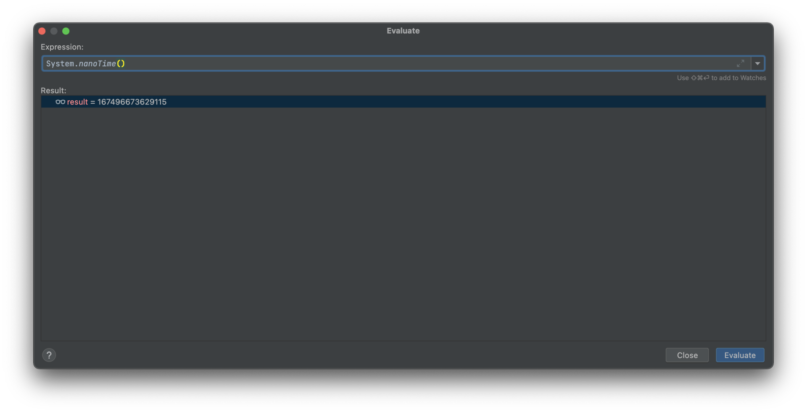
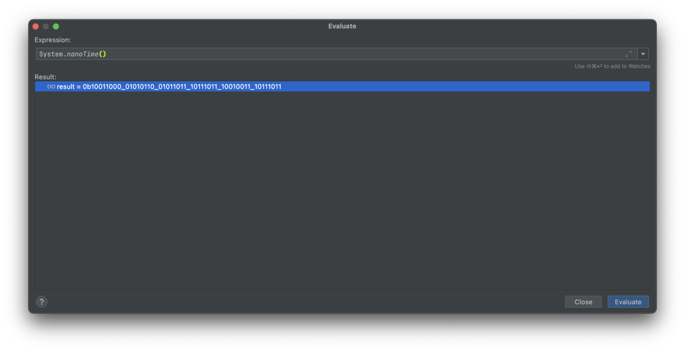
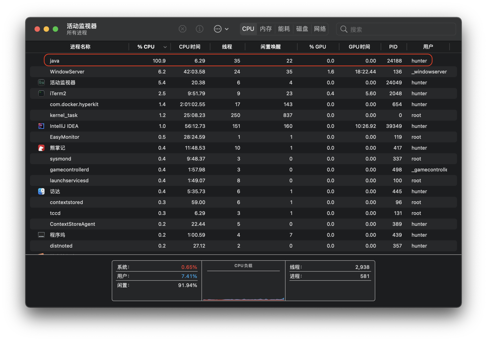
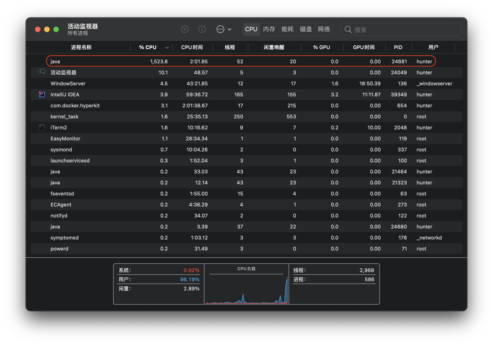

- 00 导读 解读OWASP Top10 2021.md.html
- 00 开篇词 从黑客的视角找漏洞，从安全的角度优雅coding.md.html
- 01 失效的访问控制：攻击者如何获取其他用户信息？.md.html
- 02 路径穿越：你的Web应用系统成了攻击者的资源管理器？.md.html
- 03 敏感数据泄露：攻击者如何获取用户账户？.md.html
- 04 权限不合理：攻击者进来就是root权限？.md.html
- 05 CSRF：为什么用户的操作他自己不承认？.md.html
- 06 加密失败：使用了加密算法也会被破解吗？.md.html
- 07 弱编码：程序之间的沟通语言安全吗？.md.html
- 08 数字证书：攻击者可以伪造证书吗？.md.html
- 09 密码算法问题：数学知识如何提高代码可靠性？.md.html
- 10 弱随机数生成器：攻击者如何预测随机数？.md.html
- 11 忘记加“盐”：加密结果强度不够吗？.md.html
- 12 注入（上）：SQL注入起手式.md.html
- 13 注入（下）：SQL注入技战法及相关安全实践.md.html
- 14 自动化注入神器（一）：sqlmap的设计思路解析.md.html
- 15 自动化注入神器（二）：sqlmap的设计架构解析.md.html
- 16 自动化注入神器（三）：sqlmap的核心实现拆解.md.html
- 17 自动化注入神器（四）：sqlmap的核心功能解析.md.html
- 19 失效的输入检测（上）：攻击者有哪些绕过方案？.md.html
- 20 失效的输入检测（下）：攻击者有哪些绕过方案？.md.html
- 21 XSS（上）：前端攻防的主战场.md.html
- 22 XSS（中）：跨站脚本攻击的危害性.md.html
- 23 XSS（下）：检测与防御方案解析.md.html
- 24 资源注入：攻击方式为什么会升级？.md.html
- 25 业务逻辑漏洞：好的开始是成功的一半.md.html
- 26 包含敏感信息的报错：将安全开发标准应用到项目中.md.html
- 27 用户账户安全：账户安全体系设计方案与实践.md.html
- 28 安全配置错误：安全问题不只是代码安全.md.html
- 29 Session与Cookie：账户体系的安全设计原理.md.html
- 30 HTTP Header安全标志：协议级别的安全支持.md.html
- 31 易受攻击和过时的组件：DevSecOps与依赖项安全检查.md.html
- 32 软件和数据完整性故障：SolarWinds事件的幕后⿊⼿.md.html
- 33 SSRF：穿越边界防护的利刃.md.html
- 34 Crawler VS Fuzzing：DAST与机器学习.md.html
- 35 自动化攻防：低代码驱动的渗透工具积累.md.html
- 36 智能攻防：构建个性化攻防平台.md.html
- 大咖助场 数字证书，困境与未来.md.html
- 春节策划（一） 视频课内容精选：Web渗透测试工具教学.md.html
- 春节策划（三） 一套测试题，看看对课程内容的掌握情况.md.html
- 春节策划（二） 给你推荐4本Web安全图书.md.html
- 结束语 无畏前行.md.html
- 捐赠
10 弱随机数生成器：攻击者如何预测随机数？
你好，我是王昊天。
上节课我们学习了密码算法的安全，有了设计优秀的密码算法，就像买了一扇牢固的防盗门，那么我们再也不用担心小偷了吗？
并不是这样，有了防盗门，我们还需要保管好钥匙才行。上节课我们一直在讨论防盗门的质量问题，而防盗门的钥匙，也就是密码算法所使用的密钥是如何生成的呢？这里就需要一个引入新的概念——随机数。
随机数的概念是很好理解的，但是实际操作起来却很难真的生成。
你一定玩过某一种棋牌类游戏，比如麻将、德州扑克这些，或者更简单的猜拳游戏也可以。考虑到每个人的游戏水平有高低，胜率一定会有些差异。在经常一起玩的朋友当中，一定有某个人在的时候你更容易赢，另外某个人在的时候你更容易输，而且这种输赢是具有统计意义上稳定性的，为什么呢？
因为在面对没有差异的选择时，你是有选择倾向性的，这种倾向性可能来自于你的回忆、你的幸运数字、你的生日等等。
所以，我们以为的随机数，往往没有那么随机。
随机数
我们来正式地认识一下随机数，这一概念在不同领域往往代表着不同的含义。我们一起来由浅入深地聊聊。
首先随机数最基本的概念是统计学意义上的伪随机数，对于给定的一个样本集，每个元素出现的概率是大概相似的，只要从人类的视角看上去一组数是随机的，就符合统计学意义上的伪随机数定义；因为统计学上的伪随机数，在给定随机样本和随机算法的情况下，能够有效地演算出随机样本的剩余部分，因此统计学上的伪随机数需要得到进一步地安全强化，密码学安全的伪随机数应运而生；而随机数的最终概念形态，则是真随机数，其定义是在满足前两个条件的基础上，再增加一个随机样本不可重现的条件。
然而，严格的真随机数是一种非常理想的形态，从真实情况来看，只要给定边界条件，真随机数其实并不存在。因为无论背景辐射、物理噪音还是抛掷硬币，只要经过非常精密的观察和测量，都是可以被预测的。但是在这些例子中，实际的边界条件非常复杂，而且是极难观测的，因此我们可以认为这些条件下产生的随机数是非常接近真随机数的伪随机数。
那么为什么随机数的随机性如此重要呢？因为在我们前一节课程中探讨过的密码算法需要大量随机数的参与，一旦随机数的生成可以被预测，任何加密算法都将失去意义。
随机数的生成
产生随机数的方法被称为随机数生成器（RNG, random number generator）。
在实际应用中我们往往使用伪随机就足够了，这些随机数主要通过一个固定的、可重复的计算方法生成，这些计算方法经过特殊的设计，使得产生的结果具有类似真随机数的统计学特征。这种生成的伪随机数一般只是重复的周期比较大的数列，以算法和种子值共同作用生成。这种生成伪随机数的方法叫伪随机数生成器（PRNG, pseudo-random number generator），进一步能够生成密码学安全随机数的方法叫密码学伪随机数生成器（CPRNG, cryptographic pseudo-random number generator）。
从实现的角度来看，伪随机数生成器会在函数内部维护一个状态，每个随机数的诞生，时都是从这个状态计算出来的，这个状态随着下一个随机数的生成而改变，而第一个状态则是由种子初始化得到。

在一些密码学关键设施中，会使用到真正的随机数，这些随机数往往由噪音、辐射等物理现象生成，这个过程中所使用的生成器叫物理性随机数生成器。
在了解随机数概念及其生成方案后，接下来我们来了解一下开发过程中会面临哪些随机数方面的安全风险。
无效的随机数
当我们在开发应用的过程中，如果所使用的随机数算法不够安全，比如使用了PRNG而并没有使用CPRNG，或者使用了不安全的种子值，就可能会使得攻击者能够猜测出下一个生成的随机数，进而凭借猜测的随机数发动攻击。至于PRNG究竟哪里不安全，我在后文的案例部分再向你详细介绍。
举个例子，如下代码尝试去为用户生成session值：
function generateSessionValue( $user ) {
// 注释：设置种子值
srand( $user );
return rand();
}
由于代码中所使用的种子值每次都是不变的，因此该函数返回的session值也不会发生变化，攻击者可以利用该缺陷尝试劫持会话。
小空间种子选择
在上面描述的坏代码样本中，如果我们尝试去优化，那么方案是什么呢？
考虑到，这段代码存在的问题，是将种子值设定成了固定数值，那么为了解决这个问题，我们现在尝试将种子值，设置为随机数值：
function generateSessionValue( $user ) {
// 注释：设置种子值
$random_val = rand(0,9);
srand( $random_val );
// ...
}
这样的优化，是否会修复代码中不安全漏洞呢？答案是否定的，这种优化，只是小幅度提高了，漏洞利用的复杂程度。在上述代码中，由于random_val的取值空间过小，将会面临暴力破解攻击，攻击者只需要执行10次遍历，就可以找到被生成的随机数。
由于使用了取值空间很小的种子，这段代码将被暴露在暴力破解攻击中。要知道计算机是一种执行确定行为的机器，因此是无法生成真正的随机数的。虽然伪随机数生成器从算法设计层面满足了相似的随机性特征，但其一旦设定了种子值，其生成的随机数序列就是完全确定的。正因如此，我们要尽量确保种子值对于攻击者是不可预测的。
密码学安全的伪随机数
再进一步，我们将种子值的随机性放大，继续优化代码的安全性。
可以看到，如下代码使用Random.nextInt()函数来生成新的URL地址，其种子值由(new Date()).getTime()生成，该数值为1970年1月1日00:00:00 GMT至今的毫秒数，已经具备较强的随机性和不可预测性。那么，这是否能说明，这段代码已经安全了呢？
String generateUrl( String baseUrl ) {
Random randomGen = new Random();
randomGen.setSeed((new Date()).getTime());
return (baseUrl + randomGen.nextInt(400000000) + ".html");
}
答案并非如此。Random.nextInt()函数是java.util.Random类的成员函数，而java.util.Random类是一个统计学意义上的伪随机数生成器，因此会更容易被攻击者猜测到生成的数值，对于安全性敏感的应用，建议使用密码学安全的随机数生成器java.security.SecureRandom。
案例实战
做了这么多年安全，有一句话我非常喜欢，“Talk is cheap, show me the code”。
很多高深的安全知识，讲出来似乎都十分有道理，但是实践起来往往不是那么回事。现在我们就来一起解答上面提到的问题：虽然推荐使用CPRNG，但是PRNG究竟哪里不安全了呢？知其然更要知其所以然，接下来我们就上干货，带你实战攻击伪随机数生成器！
这次我们以漏洞CVE-2019-10908为例，这是一个在Airsonic 10.2.1版本存在的漏洞。Airsonic是一个免费并且开源的产品，由社区驱动开发和维护，它是一个提供分享和访问多媒体流功能的Web应用。
该项目的RecoverController.java通过org.apache.commons.lang.RandomStringUtils来生成用户密码，而RandomStringUtils内部实现其实是使用了java.util.Random。这里引入了两个潜在的安全隐患，一方面Random类是PRNG，无法提供密码学安全的伪随机数生成；另一方面RandomStringUtils使用了48bit的种子，使其能够较容易地被攻击者爆破。
接下来我们从攻击种子的角度尝试进行漏洞利用，不过在判断对不对之前，要先判断是不是，因此在我们进行漏洞利用之前要先分析清楚是否真的存在这个漏洞。
首先来看一下Airsonic 10.2.1版本的源码：
package org.airsonic.player.controller;
// ...
import org.apache.commons.lang.RandomStringUtils;
// ...
// ...
public ModelAndView recover(HttpServletRequest request, HttpServletResponse response) throws Exception {
Map<String, Object> map = new HashMap<String, Object>();
String usernameOrEmail = StringUtils.trimToNull(request.getParameter("usernameOrEmail"));
if (usernameOrEmail != null) {
map.put("usernameOrEmail", usernameOrEmail);
User user = getUserByUsernameOrEmail(usernameOrEmail);
boolean captchaOk;
if (settingsService.isCaptchaEnabled()) {
String recaptchaResponse = request.getParameter("g-recaptcha-response");
ReCaptcha captcha = new ReCaptcha(settingsService.getRecaptchaSecretKey());
captchaOk = recaptchaResponse != null && captcha.isValid(recaptchaResponse);
} else {
captchaOk = true;
}
if (!captchaOk) {
map.put("error", "recover.error.invalidcaptcha");
} else if (user == null) {
map.put("error", "recover.error.usernotfound");
} else if (user.getEmail() == null) {
map.put("error", "recover.error.noemail");
} else {
// 注释
// 这行代码引入了潜在的安全风险
String password = RandomStringUtils.randomAlphanumeric(8);
// ...
根据代码段中我添加的注释，我们继续分析RandomStringUtils：
package org.apache.commons.lang;
import java.util.Random;
public class RandomStringUtils {
// 注释1
private static final Random RANDOM = new Random();
public RandomStringUtils() {
}
// ...
// 注释2
public static String randomAlphanumeric(int count) {
return random(count, true, true);
}
// ...
// 老师加的注释3
public static String random(int count, int start, int end, boolean letters, boolean numbers, char[] chars, Random random) {
// ...
在注释1部分，可以看到RandomStringUtils类在调用过程中会创建一个静态的成员变量RANDOM，在应用运行过程中，这个变量会一直存在。
在注释2部分，是randomAlphanumeric的函数实现，不断追踪函数调用栈可以发现最终调用了注释3部分的函数，而调用过程最后一个函数参数即是注释1部分创建的RANDOM变量，这一调用过程意味RANDOM是唯一一组随机数序列，只要我们判断出RANDOM序列即可执行攻击。
那么顺着思路，我们继续分析关键点——RANDOM。RANDOM是通过Random()创建的java.util.Random对象。如下是直接调用Random()生成新对象时的代码：
public Random() {
this(seedUniquifier() ^ System.nanoTime());
}
private static long seedUniquifier() {
// L'Ecuyer, "Tables of Linear Congruential Generators of
// Different Sizes and Good Lattice Structure", 1999
for (;;) {
long current = seedUniquifier.get();
long next = current * 1181783497276652981L;
if (seedUniquifier.compareAndSet(current, next))
return next;
}
}
可以看到在Random()函数内部执行了种子值的设置，而具体种子值的计算则是由一段数学运算得出。
接下来我们尝试写一个Demo程序，来搭建一个最简单的环境进行安全性分析：
import org.apache.commons.lang.RandomStringUtils;
public class Main {
public static void main(String[] args) {
System.out.println("Hello World!");
String password = RandomStringUtils.randomAlphanumeric(8);
System.out.println(password);
}
}
开启调试模式，然后断点下在Random()函数内部，通过IDEA集成的Expression查看功能，我们来看一下Random()所设置的种子值大概长什么样子：

通过多次执行Demo程序，我们可以发现seedUniquifier()的取值序列每次都是相同的，以下是我通过调试模式取出的数值：
8006678197202707420
-3282039941672302964
3620162808252824828
考虑到种子值是由seedUniquifier() ^ System.nanoTime()计算得出，而seedUniquifier()的取值序列固定，因此种子值将取决于System.nanoTime()函数。继续通过Expression查看功能：

启用二进制模式查看：

可以发现System.nanoTime()的取值空间为48bit，取值范围为2^48=281474976710656≈2.8x10^14，这看起来并不是一个很大的数字，直观上存在爆破的可能性。那么我们再简单修改一下Demo程序，看一下我们电脑的算力如何：
import org.apache.commons.lang.RandomStringUtils;
public class Main {
public static void main(String[] args) {
// write your code here
System.out.println("Hello World!");
long startTime = System.nanoTime();
for (int i = 0; i < 100000000; i++) {
String password = RandomStringUtils.randomAlphanumeric(8);
}
long duringTime = System.nanoTime() - startTime;
System.out.println(duringTime);
System.out.println(duringTime / 1000000000.0);
}
}
如下是执行结果：
Hello World!
13950490348
13.950490348
Process finished with exit code 0
简单总结一下就是按照这个程序的执行速度，进行100000000也就是10^8次运算需要13.95秒。
有了这些基本数据，就很好进行分析了，简单的除法运算就能够分析清楚爆破所需时间：
2.8x10^14 / 10^8 * 13.95 = 3.9x10^7 秒 = 10833小时 = 451天
虽然找到了攻击方案，并且根据算力情况评估出了攻击成本，但很明显这个耗时有些过长了，真实场景很难实施，因此我们需要想办法降低时间消耗。
既然考虑到了效率优化，就需要关注一下我们上面所构建的Demo程序是否已经实现效率最大化。从代码逻辑上来看，很明显Demo程序是一个单进程单线程应用，可是我的电脑的CPU核心应该是8核16线程，因此我们可以从这个角度入手去提升它的效率优化空间。从Demo程序执行时的CPU占用率也可以看得出，在运行期间事实上仅有一个核心达到了100%占用：

于是我决定优化一下程序执行逻辑，并预期可以取得16倍的性能提升：
package org.example;
import org.apache.commons.lang.RandomStringUtils;
import java.util.Random;
import java.util.stream.IntStream;
import java.time.Instant;
import java.time.Duration;
import java.security.SecureRandom;
public class Main {
public static void main(String[] args) {
if (args.length != 2) {
System.out.println("must be 2 arguments");
return;
}
int from = Integer.parseInt(args[0]);
int to = Integer.parseInt(args[1]);
System.out.println("from " + from + " to " + to);
System.out.println(Runtime.getRuntime().availableProcessors());
eval("sequential", () -> {
for (int i = 0; i <= 100000000; i++) {
new RandomStringUtilsTest(i).randomAlphanumeric(8);
}
});
eval("parallel", () -> {
IntStream.range(0, 100000000).parallel().forEach(i -> new RandomStringUtilsTest(i).random(8));
});
}
public static void eval(String task, Runnable runnable) {
Instant start = Instant.now();
runnable.run();
Instant end = Instant.now();
System.out.printf("%s spend %s%n", task, Duration.between(start, end));
}
}
从输出结果可以发现并行计算下的效率大约是串行计算的16倍：
from 1 to 100000
16
sequential spend PT15.235S
parallel spend PT1.826S
Process finished with exit code 0
再观察一下执行期间的CPU占用，可以发现CPU确实是全核心在运行的。

这里仅以我的个人计算机为例进行模拟攻击的时间测算，在实际应用场景中，我们完全可以通过调度云端计算机使上百核心的并发计算，我们以128核心为例：
451天 / 128 ≈ 3.5天
可以发现在上面这种情况下，我们只需要3.5天即可完成针对该漏洞的攻击。
值得展开讨论的是，虽然在上述情况中我们可以成功进行攻击，但是实际情况往往会更加复杂，比如我们已知的随机数已经是生成的第几百个随机数，这种情况下由于需要产生较长的随机数序列进行匹配，将会导致更大的计算量。但是这种计算量增长都是线性的，我们仍然可以根据需求选择能够负载的时间和金钱成本，顺利完成攻击。
安全实践
以CVE-2019-10908为例，我们来看一下开源项目的修复方案。
首先从包的使用方面，取消了org.apache.commons.lang.RandomStringUtils的使用，并且替换为java.security.SecureRandom，根据名字很容易判断新替换的包是一个密码学安全的伪随机数生成器，该随机数生成器从算法设计角度上是密码学安全的，同时内部所使用的种子值强度也会更高。
然后在代码实现层面，放弃了原有的RandomStringUtils.randomAlphanumeric函数，转为使用新的代码实现：
private static final String SYMBOLS = "abcdefghi jklmnopqrstuvwxyzABCDEFGHIJKLMNOPQRSTUVWXYZ1234567890";
private final SecureRandom random = new SecureRandom();
private static final int PASSWORD_LENGTH = 32;
// ...
StringBuilder sb = new StringBuilder(PASSWORD_LENGTH);
for(int i=0; i<PASSWORD_LENGTH; i++) {
int index = random.nextInt(SYMBOLS.length());
sb.append(SYMBOLS.charAt(index));
}
String password = sb.toString();
简单来说，就是在开发过程中要通过安全的加密库来使用CPRNG。在不同语言中涉及的模块会有一些差异，比如Linux或者MacOS中，大部分加密库内部都依赖于/dev/random或/dev/urandom这两个随机源；在Windows中可以使用Crypto API或者BCryptGenRandom；在C#中可以使用System.Security.Cryptography.RandomNumberGenerator；在Python中可以使用os.urandom或secrets库；在Java中则可以使用我们本节课介绍的java.security.SecureRandom。
总结
这节课我们学习了随机数相关的知识。
虽然物理世界充满了不确定性和随机性，但是计算机世界并非如此。计算机是一种执行确定计算过程的机器，我们在开发过程中使用的随机数基本都是由软件算法生成的伪随机数。但即使是伪随机数，也有安全和不安全之分。
常规的伪随机数生成器又称PRNG，是基于概率设计的；而为了保证安全则需要使用密码学意义上伪随机数生成器，这种生成器又叫CPRNG。这些经过PRNG或CPRNG生成的数字，可以理解为重复周期非常大的序列，因此能够满足随机性需求。而既然是序列，就一定会有一个开始，这个开始值的产生由种子值确定，这个种子我们又称之为seed。
在考虑到PRNG以及CPRNG算法安全的情况下，种子值的安全成为了关键要素，因为一旦种子值可以被预测则生成的所有随机数都将可以被预测。由此引发的一系列安全风险包括无效的随机数、小空间种子值以及非密码学安全的随机数生成器等。
虽然围绕密码学和随机数展开的攻击案例并不多见，但是本节课我们以CVE-2019-10908为例进行了真实的随机数层面的攻击，从实战过程可以发现这类攻击要求攻击者具备足够深厚的密码学和随机数相关的知识，同时需要具备一定的开发功底。正因如此，许多开发者并未重视这类安全问题，与CVE-2019-10908相似的安全风险仍普遍存在于许多应用中。
关于随机数方面的安全建议，仍然可以参考CVE-2019-10908的开源项目更新方案，从安全库的使用及随机数生成过程两个方面共同优化。
也许你会觉得本节课程中涉及的漏洞利用过程稍有复杂，不过别担心，随着课程的不断更新，在后续课程中你将学会搭建和使用属于自己的个性化智能攻防对抗系统，这将大幅度降低类似攻击过程的复杂度及难度，让你的安全能力持续积累、快速提高。
思考
本节课我们以CVE-2019-10908为例研究了随机数攻击中的种子爆破攻击，你可以尝试从PRNG v.s. CPRNG的角度分析其安全缺陷吗？
欢迎你在评论区留下自己的思考，我们下节课再见。
© 2019 - 2023 Liangliang Lee. Powered by gin and hexo-theme-book.